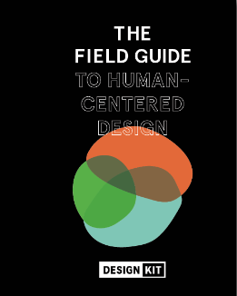

DEVELOPMENT ETHICS IN HUMAN-CENTERED DESIGN:
When designing something there are many aspects that the designer has to consider. These include the reason they are making it, who they are making it for, and what impacts it may have. Each designer comes to the table with different perspectives and biases which affects how they think about these aspects. Unfortunately, there is a history of people designing for their interests alone, purposely causing negative returns. Some obvious examples of this would include Apartheid or the segregation of America’s major cities. In both of these examples, systems were designed to not only help certain people but to disadvantage the rest of the population.
Admittedly, it is difficult to prevent people who choose to design with ill intentions. However, we can focus on creating more equitable design both on a large and small scale by centering our design on improving human dignity for all. In order to manifest these intentions, the concept of development ethics has recently evolved as a form of asking these ethical questions in development projects. Much like we do in any other field like business or medicine, we need to consider if the actions of development practitioners are truly beneficial to the recipients, or are serving political agendas. Human-centered design assists in this process as it focuses on bridging the divide between those designing and those the design is being made for. At times this divide is even taken away completely. This takes place over a cycle of three steps, as defined by IDEO, ‘Inspiration, Ideation, and Implementation.”
Human-Centered Design is the idea and practice of incorporating the audience's input into the design process
Human-Centered Design is an innovative approach to the development of new ideas or products through the integration of human (those the design is intended for) throughout the whole process of design. It is used mainly in design but it can be found in fields from engineering to the arts.
Human-centered design is a general concept that lends itself to many different industries. In the context of development projects, it shines most in the area of personal communication. Once a problem is identified you take ‘inspiration’ from communicating with the people that experience it on a daily basis as initial research. Through this first step, the community’s issues come to life and allow your team to be more invested in the people they’re helping and not just the project. Getting to know the people that the design is for also builds a rapport between the designer and the community. So that they are also invested in the project and seeing their goals to fruition.
The following steps of ideation and implementation continue the design process without deviating from the human connection aspect. One quote that sums the goals of human-centered design well comes from Olivar Delarue who worked as the UNHCR, “It is about them and for them. The closer the end-users’ needs are analyzed and answered, the more successful the adoption or purchase of a solution. You iterate until you get it right from a customer perspective. This is the power of HCD.”
The first step of the human-centered design approach is, ‘inspiration.’ This requires the designer to get to know their audience and the issue at hand. In this step, project designers are encouraged to empathize with the audience of the potential project and commit to understanding their experiences. This step is the foundation of the HCD approach because it helps the designer engage with the community they are working with and come up with more streamlined solutions that will be more relevant to the presented needs.
There are generally two parts to this process in Human-Centered Design:
Knowing the community: To effectively implement the human-centered design approach, one has to get to know the community in which the problem resides. In best-case scenarios, designers are able to devote time to living in the community and experiencing first-hand the issues facing their audience. A designer can also perform extensive research on the community, via second-hand information. Through these methods, the designers gain a deeper understanding of the factors that contribute to the problem in question.
Understanding the problem: The second aspect of the inspiration process is understanding the problem. Why are you choosing to address this issue and how does the problem manifest in the lives of the individuals? This aspect often entails performing interviews with community members and asking specific questions relative to the problem that’s to be solved.
IDEO is a design studio that has been a leading figure in the field of human-centered design. They both incorporate them into their many designs and teach the concept to others. One project of theirs that will be used as a best practice case study is Asili.
Asili is a community-owned health water and agriculture business in the Democracy of the Republic of Congo. It was created and set up to address the high child mortality rates due to unclean water and in some cases the low incomes of the mother. The American Refugee Committee together with IDEO partnered to create Asili as a solution to achieve better healthcare for children in the Democracy of the Republic of Congo.
IDEO project designers were determined to make sure they understood the problem of these mothers and were creating a solution that conveyed the empathy they had. Consequently, they made a visit to the area and imbibed themselves in the community, and had interviews with members of the community to hear more about their individual experiences and the possible additional determinants that contribute to the high infant mortality rates. This guided the development of their solution.
The next step in the Human-Centered Design process is to utilize the inspiration and ideas from step one in order to begin research, to develop various types of strategies and solutions to meet the needs of the audience. During this step, it is important to continue working with the community to keep your design aligned with their interests.
Actions taken in this step can include:
This step includes the process of brainstorming and finalizing the various types of solutions/ strategies, then discussing and deciding on the best solution possible and beginning the first steps in testing out these ideas. This can include incorporating your target group in your development of prototypes and testing solutions within the community or organization you plan to work with.
The last step of the Human-Centered Design process can in some cases be the most lengthy of the three. Research, interviewing, and creating a prototype take time but testing and tweaking them is where time should really be invested. By this point the prototype will most likely not be complete but ready to be tested in the field.
Benefits from fielding testing:
Time to engage with the people (and their culture):Feedback, feedback, feedback! The goal of your project is to support communities to live more fulfillingly, no matter what aspect of life you are helping. The only way to solve their problem effectively is to receive human input from the community. Although the first prototype is based on earlier feedback it is still affected by your own biases and experiences. Through community testing, you can adjust the prototype to be in line with the needs and cultural norms.
Experience problems that can not be replicated in a design studio:Depending on the goal of your project your prototype could be any matter of things. It might be a social media campaign, a business, a device that will help banana farmers fight diseases wiping out their crops, or a toolkit. In all of these cases, the real test of their endurance is putting them in the ‘real world’. This way they will be able to encounter problems that are either difficult to recreate or could not have been thought of otherwise.
There are many design studios that base their work on the ideology of human-centered design. The most well-known would be IDEO.org, which also generously share their ideas with the general public through handbooks and games. They have worked on projects from a refugee camp feedback system to a financial app for teenagers. Through their projects, they aim to put people first and reach inclusive and innovative outcomes.
